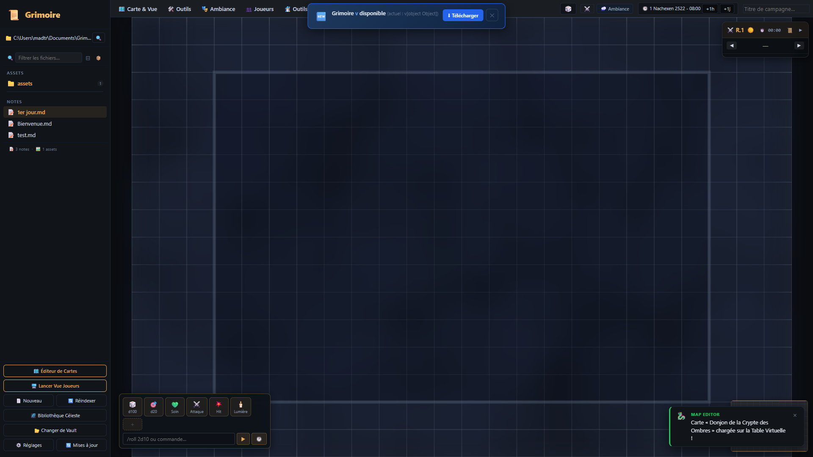

La Table Virtuelle (VTT) & Combat Tactique
Propulsée par le moteur graphique haute performance PixiJS v8, la Table Virtuelle de Grimoire vous offre un contrôle absolu sur vos cartes de combat : brouillard de guerre interactif, éclairage d'ambiance et météo, pions animés avec jauges de vie, gabarits de sorts dynamiques et suivi d'initiative en temps réel.
🎯 Anatomie de la Table Virtuelle
Survolez ou cliquez sur les pastilles dorées numérotées pour explorer chaque fonctionnalité clé.

Barre Supérieure Tactique
Accès immédiat aux menus contextuels de la table : 🗺️ Carte & Vue, ⚔️ Outils, 🎭 Ambiance, 👥 Joueurs et 🧙♂️ Outils MJ.
Compteur de Rounds & Initiative
Cadran de combat compact affichant le round en cours (R.1), le sablier de session et les flèches de navigation rapide pour faire défiler les tours.
Canevas PixiJS 60 FPS
Rendu ultra-fluide des cartes de bataille avec grille d'alignement, zoom infini à la molette, panoramique au clic droit et délimitation nette de l'arène de jeu.
MacroBar & Invite de Commande
Raccourcis de dés (d100, d20), actions rapides (Soin, Attaque, Hit, Lumière) et ligne de commande pour taper /roll 2d10+4 à tout moment.
Pont Bidirectionnel Map Editor
Notification en direct confirmant la réception et le chargement immédiat des plans créés dans l'Éditeur de Cartes dédié, sans redémarrer la session.
Testez la Table Virtuelle dans votre navigateur
Le Guide Tactique du Maître du Jeu
1. Double Écran & Écran Joueurs
Connectez une deuxième TV ou vidéoprojecteur à votre PC. Cliquez sur 🖥️ Lancer Vue Joueurs dans la barre latérale. Une fenêtre dédiée en plein écran s'ouvre, masquant automatiquement vos notes secrètes, les pièges cachés et les monstres dissimulés dans le brouillard.
2. Éclairage d'Ambiance & Météo
En un clic sur le sélecteur d'ambiance, plongez la scène dans la pénombre d'une crypte ou les éclairs d'un orage. Déclenchez le bouton ⚡ Flash d'Orage pour illuminer violemment la carte pendant un quart de seconde, synchronisé avec le grondement du tonnerre.
3. Mesures & Gabarits Tactiques
Fini les débats de distance à la table : activez l'outil gabarit et tracez un cône de 15 mètres ou un cercle de 6 mètres. La grille calcule automatiquement le nombre de cases touchées et met en surbrillance les pions pris dans l'explosion.
4. Combat & Initiative Fluide
Appuyez sur ⚔️ Combat. Les scores d'initiative envoyés depuis les smartphones des joueurs s'intègrent automatiquement dans l'ordre du tour. Utilisez la touche Espace pour passer au tour suivant en 1 seconde chrono.